Nella discussione di oggi, approfondiremo i fondamenti dei sistemi di controllo del feedback. Cominciamo con alcuni semplici esempi del mondo reale per illustrare la struttura di feedback sottostante.
Sistema di controllo del serbatoio
Considera un oggetto domestico comune: il serbatoio del WC del bagno. Lo scopo principale di questo sistema è mantenere il livello dell’acqua all’interno del serbatoio.
Obiettivo: controllare il livello dell’acqua nel serbatoio fino a un livello preimpostato.
Variabile controllata: Livello dell’acqua nel serbatoio.
Segnale di comando: Altezza preimpostata, \(\bar{H}\)
Disturbo: Deflusso dal serbatoio.
Variabile manipolata: afflusso al serbatoio.
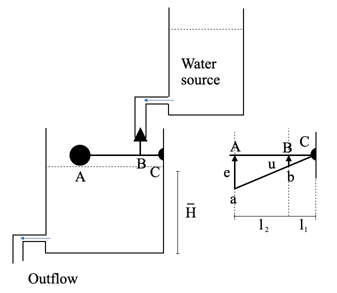
Se c’è qualche deviazione dal livello dell’acqua desiderato, la differenza (errore, \(e\)) attiverà il controller: il meccanismo a galleggiante e leva. Questo controller regola la posizione della valvola, \(u\), proporzionale al segnale di errore.
\[
u = \frac{l_1}{l_1+l_2}e = Ke
\]
Man mano che l’acqua entra, l’errore diminuisce, fino a raggiungere lo zero, provocando la chiusura della valvola. Nota che possiamo cambiare \(K\) cambiando la posizione del punto \(B\).
Diagramma a blocchi
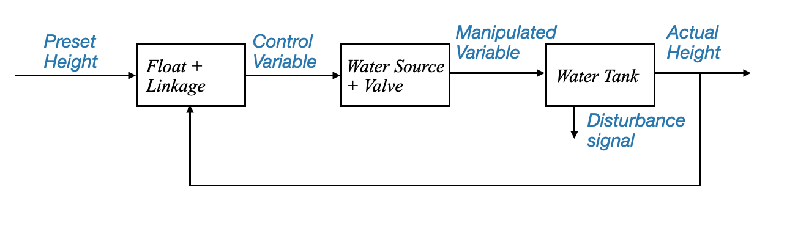
o in una forma più generale:
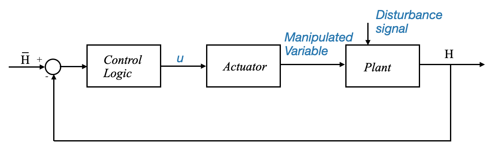
Da Raymond T. Stefani, Bahram Shahian e Clement J. Savant, “Design of feedback control Systems”, 4a edizione, Oxford University Press, 2001.
Si noti che il disturbo è l’acqua che fuoriesce dal serbatoio dell’acqua.
Terminologia: - Set-point: segnale di comando costante - Regolatore: sistema di controllo che mira a mantenere la variabile controllata al set-point.
Sistema di controllo della guida dell’automobile
Un altro esempio familiare è un sistema di guida automobilistica, che può controllare sia la direzione (rotta) che la velocità.
Obiettivo: controllare la direzione e la velocità del veicolo.
Variabili controllate: direzione e velocità.
Segnali di comando: direzione dell’autostrada e limiti di velocità.
Disturbi: forza del vento, condizioni della strada e del traffico.
Variabili manipolate: posizione dello sterzo e dell’acceleratore/freno.
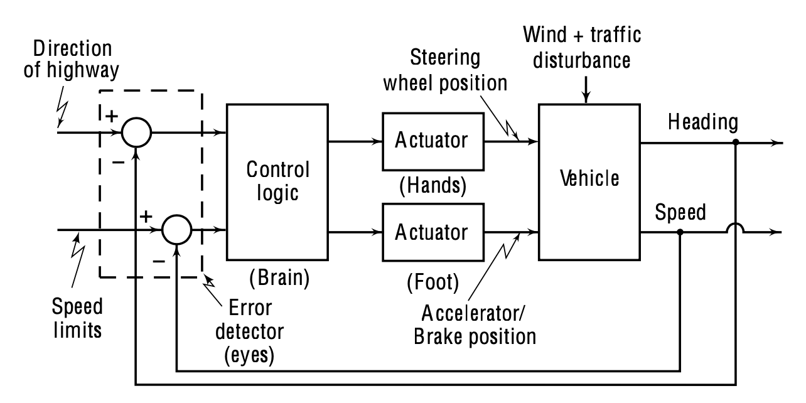
Da. Gopal, “Principi e progettazione del sistema di controllo”, McGraw-Hill, 3a edizione._
Questo sistema presenta un aspetto interessante: ha più variabili di input e output. Tali sistemi sono comunemente indicati come MIMO (Multi-Input Multi-Output) o sistemi multivariabili. Ciò è in contrasto con l’esempio del serbatoio, che era un SISO (Single Input Single Output) o un sistema scalare.
La complessità nella progettazione dei sistemi MIMO spesso deriva dalle interazioni (o accoppiamenti) tra input e output. Ad esempio, mentre lo sterzo influisce principalmente sulla direzione del veicolo, l’applicazione dei freni, che potrebbe bloccare la ruota, potrebbe influire sia sulla velocità che sulla direzione.
In molti casi, tuttavia, queste interazioni possono essere trascurabilmente piccole. Quando ciò accade, il sistema può essere trattato come due sistemi SISO (single input single output) separati. Per esempio:
Sistema 1: dove l’input è un comando di sterzo e l’output è la direzione del veicolo.
Sistema 2: dove l’input è l’accelerazione o la posizione del freno e l’output è la velocità del veicolo.
La scomposizione di un sistema multivariabile in sistemi SISO può semplificare notevolmente il processo di progettazione. Questo è il motivo per cui, nonostante la prevalenza dei sistemi multivariabili nel settore industriale, molti progetti si concentrano sui sistemi SISO. Sono fondamentali e cruciali.
Ci concentriamo principalmente sulla progettazione di sistemi a singolo ingresso e singola uscita. Questo approccio non implica che le industrie si occupino solo dei sistemi SISO. Invece, evidenzia i casi frequenti in cui le interazioni in un sistema multivariabile possono essere trascurate, consentendo di trattarlo come sistemi SISO multipli.
Torniamo al sistema di controllo dell’automobile e approfondiamo i vari componenti:
Attuatore: trasforma un segnale elettrico in un’azione meccanica. Nel nostro sistema automobilistico, possiamo pensare al pedale dell’acceleratore come a un attuatore. Allo stesso modo, per frenare, il nostro piede funge da attuatore.
Rilevatore di errori: essenziale per i sistemi di feedback, questo blocco rileva la differenza tra lo stato desiderato e quello reale. Nel contesto della guida, i nostri occhi fungono da rilevatore di errori.
Logica di controllo: situata nel cervello del conducente, elabora le informazioni per prendere decisioni.
Comandi: sono dinamici e cambiano in base a fattori esterni come i segnali stradali e le indicazioni stradali.
Quando lo scopo del sistema è fare in modo che la variabile controllata (come la velocità o la direzione) segua comandi che variano nel tempo, viene definito sistema di tracciamento o sistema che segue i comandi.
Ci riferiamo ai regolatori quando il loro scopo è seguire un segnale che non varia nel tempo.
Meccanismo del servosterzo idraulico
Il servosterzo idraulico offre un esempio intuitivo di sistema di feedback.
Movimento del volante: quando il conducente gira il volante, la scatola dello sterzo ruota.
Flusso del fluido idraulico: questa rotazione agisce sulla valvola di controllo, che dirige il fluido idraulico a sinistra o a destra del pistone.
Movimento del pistone: La pressione del fluido idraulico agisce sul pistone all’interno del cilindro, facendolo spostare lateralmente. Questo movimento aiuta a girare le ruote dell’auto.
Feedback: il movimento delle ruote genera un feedback che regola il flusso del fluido idraulico, garantendo che il volante e le ruote effettive del veicolo siano allineati.
Per analizzare e progettare correttamente un sistema di questo tipo:
Modellare il sistema: sviluppare una rappresentazione matematica. Ad esempio, un modello fisico per questo sistema meccanico potrebbe interconnettere elementi di massa, molla e attrito.
Costruisci un diagramma a blocchi: questo rappresenterebbe il modo in cui interagiscono diversi componenti come il segnale di comando, il rilevatore di errori, l’impianto (come il pistone e il carico) e altri.
Considerare i disturbi: ogni meccanismo di feedback dovrebbe tenere conto dei disturbi esterni. Nel contesto della guida, potrebbe trattarsi del vento o di variazioni di carico sul veicolo.
Il sistema precedente può essere approssimato con:
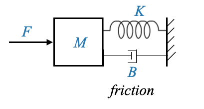
e rappresentato tramite il seguente schema a blocchi:
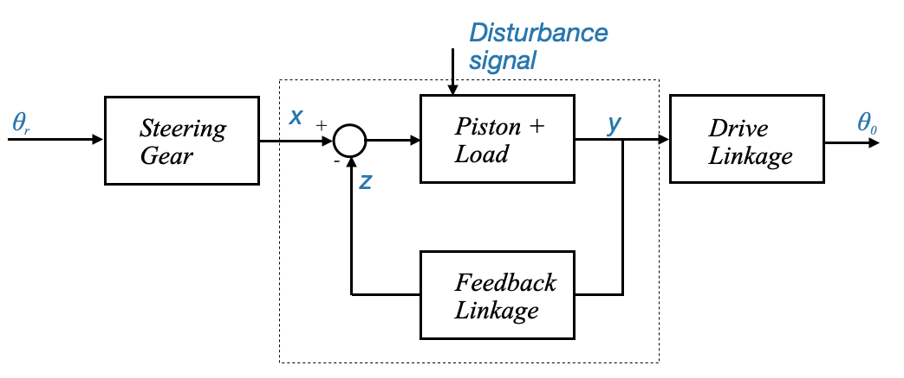
Notare che: - La parte feedback è evidenziata all’interno della linea tratteggiata - Il segnale di riferimento (o variabile di riferimento) \(x\) è proporzionale al segnale di comando \(\theta_r\) e lo sterzo è nel mezzo. - Il segnale di comando e la variabile di riferimento in un particolare sistema possono essere la stessa cosa, ma potrebbero essere diversi - Il segnale di uscita \(\theta_0\) dipende dalla variabile controllata \(y\). Parliamo di una variabile controllata indirettamente.
Impianto di riscaldamento residenziale
Un sistema di controllo del feedback regola il comportamento di un sistema confrontando la sua uscita con un segnale di comando (o riferimento) desiderato. La differenza tra questi due segnali forma un segnale di errore, che il sistema di controllo utilizza per regolare la propria uscita per ridurre al minimo o eliminare l’errore. Approfondiremo ora questo concetto prendendo come esempio un impianto di riscaldamento residenziale.
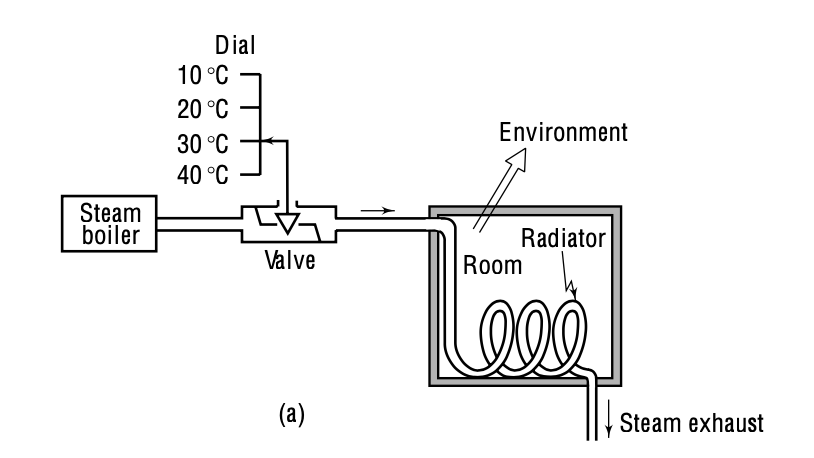
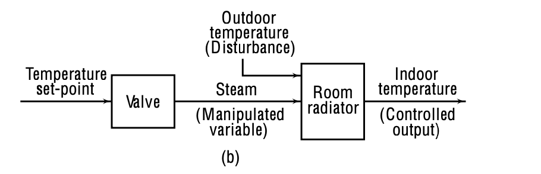
Figura: controllo della temperatura a circuito aperto (dai principi e dalla progettazione dei sistemi di controllo)
In un sistema a circuito aperto, non è prevista la regolazione automatica di eventuali errori nella temperatura di uscita che potrebbero verificarsi.
Se c’è qualche errore, deve essere individuato dal gestore dell’impianto di riscaldamento e quindi la modifica necessaria deve essere apportata manualmente.
Nel controllo ad anello aperto, dobbiamo ripristinare i valori di ingresso del controller o convivere con le conseguenze di ambienti surriscaldati, uso eccessivo di energia, ecc. Il modo per correggere questo problema è informare il controller in linea su cosa non va.
Componenti del sistema di feedback
Segnale di comando: questa è l’uscita del sistema desiderata. Nel nostro esempio di riscaldamento residenziale, è la temperatura preimpostata che l’utente desidera per la stanza.
Variabile di riferimento: traduce il segnale di comando in una forma che il sistema può utilizzare. Per l’impianto di riscaldamento è lo spostamento di una vite di fissaggio che regola la distanza tra il termostato e un interruttore a scatto (o la portata del vapore, tuttavia possiamo considerarla anche come una variabile controllata indirettamente).
Impianto: radiatore ambiente
Variabile controllata: è la temperatura ambiente.
Variabile controllata indirettamente: questa è una traslazione della variabile controllata per ottenere il lavoro desiderato. Per il sistema di riscaldamento, potrebbe essere la quantità di flusso di vapore o l’apertura della valvola.
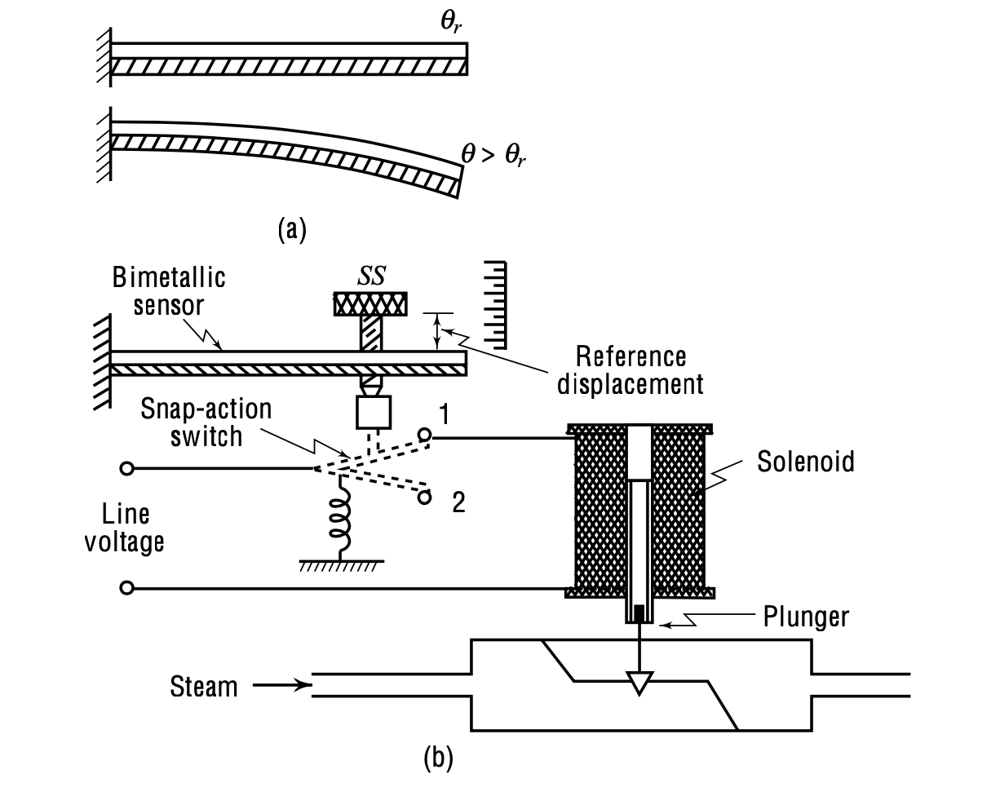
Un quadrante imposta la temperatura ambiente desiderata (Segnale di comando).
La temperatura desiderata imposta la distanza tra il termostato e un interruttore a scatto (Variabile di riferimento).
Il termostato, costituito da una striscia bimetallica, si arriccia a causa delle variazioni di temperatura. L’arricciatura della striscia controlla l’interruttore a scatto, che a sua volta controlla il solenoide e lo stantuffo, regolando l’apertura della valvola e il flusso di vapore.
La temperatura ambiente effettiva è influenzata da questo flusso di vapore (variabile controllata).
Se la temperatura ambiente sale al di sopra o al di sotto della temperatura impostata, la lamina bimetallica si muove provocando una serie di azioni che regolano il flusso di vapore per riportare la temperatura al livello desiderato.
Il sistema descritto funziona secondo una logica di controllo “on-off”. La valvola è completamente aperta (on) o completamente chiusa (off). Questo approccio può far sì che la temperatura ambiente oscilli tra due setpoint attorno alla temperatura desiderata.
Un simile comportamento oscillatorio è spesso accettabile per il riscaldamento residenziale. L’intervallo di fluttuazione della temperatura può essere regolato in base alle preferenze dell’utente o alla progettazione del sistema.
Disturbi: Due tipi di disturbi possono influenzare un sistema:
Disturbi interni: cambiamenti all’interno del sistema stesso, come l’invecchiamento dei tubi del radiatore.
Disturbi esterni: fattori esterni che influenzano il sistema, come la temperatura ambientale esterna.
Un sistema di feedback è particolarmente utile in ambienti con disturbi frequenti o significativi. Si regola e si adatta continuamente per mantenere l’output desiderato, garantendo prestazioni costanti.
Scriviamo uno script Python per simulare e tracciare il controllo della temperatura di una stanza utilizzando un controller on-off
La stanza ha una temperatura desiderata (set_point).
Il controller on-off accenderà il riscaldatore quando la temperatura scende al di sotto del set_point - delta e si spegne quando la temperatura supera il set_point + delta (dove delta è una piccola differenza di temperatura per evitare frequenti accensioni e spegnimenti).
La temperatura aumenterà quando il riscaldatore è acceso e diminuirà a causa degli effetti ambientali quando il riscaldatore è spento.
Per semplicità, modelleremo la variazione di temperatura con equazioni lineari.
import matplotlib.pyplot as pltimport numpy as np# Parametersset_point =20# Desired room temperature in degrees Celsiusdelta =1# Tolerance in degrees Celsius. This is simulating the time it takes for the thermostat to kick in.duration =300# Simulation time in minutesheating_rate =0.1# Temperature rise per minute when heater is oncooling_rate =0.05# Temperature drop per minute when heater is offinitial_temp =18# Initial room temperature# Initialize lists to store resultstimes = np.arange(0, duration, 1)temperatures = [initial_temp]heater_status = [0] # 0: off, 1: on# On-off controller simulationfor t in times[1:]: current_temp = temperatures[-1]if current_temp < set_point - delta: heater_status.append(1) temperatures.append(current_temp + heating_rate)elif current_temp > set_point + delta: heater_status.append(0) temperatures.append(current_temp - cooling_rate)else: heater_status.append(heater_status[-1])if heater_status[-1] ==1: temperatures.append(current_temp + heating_rate)else: temperatures.append(current_temp - cooling_rate)# Plottingfig, ax1 = plt.subplots()ax1.set_xlabel('Time (minutes)')ax1.set_ylabel('Temperature (°C)', color='tab:blue')ax1.plot(times, temperatures, label='Room Temperature', color='tab:blue', linewidth=3)ax1.axhline(y=set_point, color='r', linestyle='--', label='Set Point')ax1.tick_params(axis='y', labelcolor='tab:blue')ax1.legend(loc='upper left')ax2 = ax1.twinx()ax2.set_ylabel('Heater Status', color='tab:orange')ax2.step(times, heater_status, label='Heater Status', color='tab:orange')ax2.tick_params(axis='y', labelcolor='tab:orange')plt.title('On-Off Temperature Controller')plt.tight_layout()plt.show()
In un’applicazione di riscaldamento residenziale l’oscillazione (ad esempio, 20 gradi centigradi più meno 1 grado) potrebbe essere tollerata
Questo tipo di logica di controllo è chiamata controllo on/off (o controllo bang/bang)
Possiamo collocarlo all’interno di uno schema a blocchi più generale:
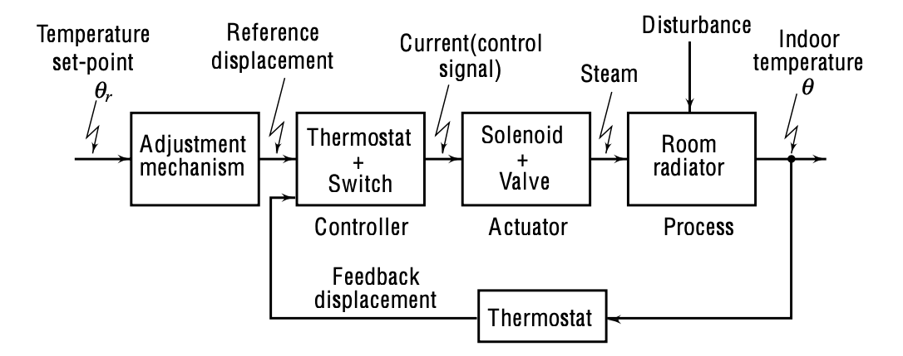
Il circuito di regolazione della temperatura può essere suddiviso in più componenti:
Azione di feedback (sensore): rappresentata dal termostato. La temperatura ambiente desiderata, θ, viene continuamente confrontata con la temperatura effettiva da questo termostato.
Controller: la combinazione del termostato e dell’interruttore funziona come controller. Il ruolo del controller è modulare la corrente in base al feedback.
Attuatore: questo è un componente vitale che produce un segnale manipolato adatto per l’impianto, spesso amplificando l’ingresso a un livello adatto per azionare l’impianto. Nel nostro sistema di riscaldamento, l’attuatore è una combinazione di solenoide e valvola. La sua uscita è il flusso di vapore che riscalda l’ambiente.
Impianto: questo è il sistema che vogliamo controllare, in questo caso il radiatore della stanza.
Disturbo: fattori esterni, come la temperatura ambientale, che potrebbero influenzare la pianta.
Diagramma a blocchi della struttura di feedback di base
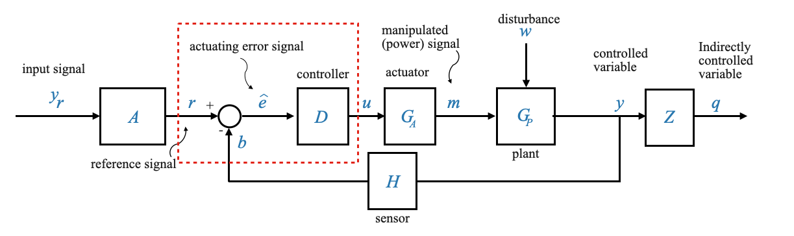
\(y_r\): il segnale di comando. Ciò potrebbe rappresentare la temperatura, lo spostamento, il livello dell’acqua, ecc.
\(A\): Blocco per gli elementi di ingresso di riferimento responsabili della generazione del segnale di riferimento, \(r\).
\(b\): segnale di feedback confrontato con \(r\) per produrre un segnale di errore di attuazione, \(\hat{e}\)
\(D\): Il controller o blocco logico di controllo che genera un segnale di controllo \(u\) basato su \(\hat{e}\).
\(w\): disturbo agente sull’impianto
\(G_A\): Il blocco attuatore, aumentando il livello di potenza del segnale per pilotare l’impianto, producendo un segnale manipolato.
\(G_P\): L’impianto o processo che riceve il segnale manipolato \(m\) e i disturbi \(w\) per produrre l’uscita \(y\).
\(y\): variabile manipolata (output)
\(H\): elemento del sistema di feedback (sensore)
\(Z\): sistema controllato indirettamente (non parte del feedback
\(q\): uscita controllata indirettamente
Nota: non tutti i sistemi includeranno tutti i blocchi o le variabili elencate, ma questa struttura funge da base per comprendere il flusso di informazioni nei sistemi di controllo del feedback.